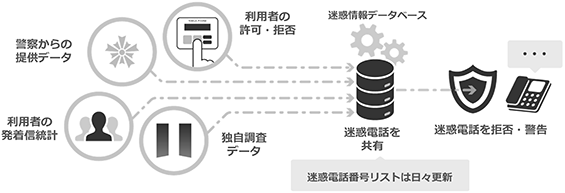
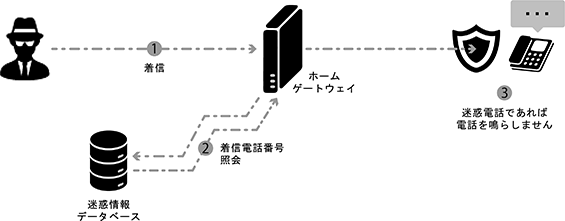
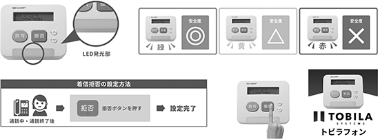
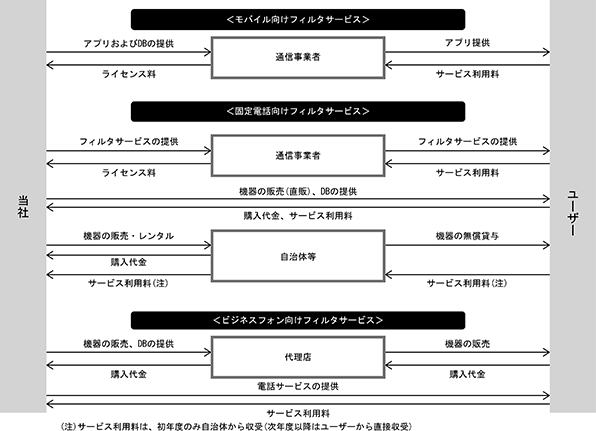
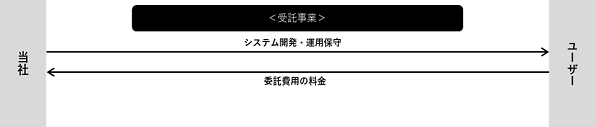

(注) １．当社は連結財務諸表を作成しておりませんので、連結会計年度に係る主要な経営指標等の推移については記載しておりません。
２．持分法を適用した場合の投資利益については、第15期以前については関連会社が存在しないため記載しておりません。第16期においては、持分法の対象となる関連会社は存在するものの、投資損益の発生がないため、記載しておりません。
３．第13期の１株当たり配当額及び配当性向については、配当を実施していないため記載しておりません。
４．従業員数は就業人員であり、臨時雇用者数(契約社員、パート・アルバイト、人材会社からの派遣社員を含む。)については、〔 〕内に年間の平均雇用人員数を外数で記載しております。
５．当社は、2019年１月16日付で株式１株につき100株の割合で、2019年10月11日付で株式１株につき３株の割合で株式分割を行っております。第13期の期首に当該株式分割が行われたと仮定し、１株当たり純資産額、１株当たり当期純利益金額及び潜在株式調整後１株当たり当期純利益金額を算定しております。
６．第13期の潜在株式調整後１株当たり当期純利益金額については、当社は2019年４月25日に東京証券取引所マザーズ市場に上場したため、新規上場日から期末日までの平均株価を期中平均株価とみなして算定しております。
７．当社株式は、2019年４月25日付で東京証券取引所マザーズ市場に上場したため、第13期の株主総利回り及び比較指標については記載しておりません。
８．最高・最低株価は、2020年４月26日までは東京証券取引所マザーズ、2020年４月27日以降は東京証券取引所市場第一部、2022年４月４日以降は東京証券取引所プライム市場、2023年10月20日以降は東京証券取引所スタンダード市場における株価を記載しております。ただし、当社株式は2019年４月25日付で東京証券取引所マザーズ市場に上場したため、それ以前の株価については該当事項はありません。なお、第13期の株価については株式分割後の最高株価及び最低株価を記載しており、株式分割前の最高株価及び最低株価を括弧内に記載しております。
９．「収益認識に関する会計基準」（企業会計基準第29号 2020年３月31日）等を第16期の期首から適用しており、第16期以降に係る主要な経営指標等については、当該会計基準等を適用した後の指標等となっております。
当社は「私たちの生活 私たちの世界を よりよい未来につなぐトビラになる」を企業理念として掲げ、この企業理念に基づき、「誰かがやらなければならないが、誰もが実現できていない社会的課題の解決を革新的なテクノロジーで実現すること」を事業方針の軸としております。人々の生活に定着したスマートフォンをはじめとする身近なインターネットデバイスは、生活の利便性を高め、世界一の高齢社会に向かう日本の経済成長を持続可能にするために不可欠なツールとなっています。
その一方で、電話を活用した振り込め詐欺に代表される特殊詐欺や、スマートフォンや携帯電話のショートメッセージサービス（SMS）を悪用したフィッシング詐欺など、インターネットデバイスを通じた社会問題が発生しています。
当社は、こうした多数かつ多額の被害をもたらす特殊詐欺や社会問題等の抑止に効果的な迷惑情報フィルタ事業に注力しています。独自の機械学習サイクルを備えたデータベーステクノロジー(※１)を活用し、スマートフォン利用者が特段意識することなく、犯罪の脅威から安心安全な生活を守れるよう犯罪抑止に効果的なセキュリティ商品・サービスを提供しており、疑わしい電話番号の情報を、警察等の公的機関からの連携、サービス利用者からのフィードバック、インターネットでの情報収集等で網羅的に集積(※２)し、習慣性判定を行うAI技術で迷惑電話番号を抽出（※３）し、迷惑電話番号リストを日々最新化しております。
※１ デジタル技術の進化に伴い、様々な情報がデータベースにログ情報として蓄積できるようになりました。当社では、独自の調査とデータ収集活動により収集した様々なデータベースを統合・解析し、機械学習を活用した分析を行うことにより、リスク検知に有用な情報として加工する技術を有しており、このことを「データベーステクノロジー」と表現しております。
※２ 2023年10月末現在において、企業や店舗、公共施設等の電話番号情報を561万件以上、うち迷惑電話番号に関する情報を約３万件データベース化しております。また、これらの情報は日々更新され、高品質なデータベースの維持・向上に努めております。
※３ 当社では、警察等の公的機関による情報提供、利用者からの着信拒否・許可といったフィードバック情報や、当社による独自の調査活動を通じて、電話番号ごとに迷惑度合いの点数化を行い、データベースに蓄積しております。このデータベースに蓄積された情報から、特殊詐欺など犯罪に利用された電話番号やしつこいセールスの電話番号など、迷惑電話をかける可能性のある番号を、統計や機械学習を用いた当社独自のアルゴリズムにより自動的に迷惑電話番号候補として抽出し、当社技術者が迷惑電話番号リストへの登録要否を最終判断することをもって、迷惑電話番号リストを作成・更新しております。
（当社の事業展開）
当社は社会問題の１つである特殊詐欺の防止に有効な商品・サービスとして、迷惑電話番号リストを活用し、利用者にとって未知の迷惑電話番号であっても自動的に着信拒否設定がなされる「迷惑情報フィルタ事業」を主要事業として展開しております。
同事業は、自社の得意分野にリソースを集中するため、プロモーションや販売代金の回収については主に通信キャリアや通信回線事業者といった提携先により実施されており、顧客獲得コストの低い収益モデルとなっております。また、これらの通信キャリアや通信回線事業者、メーカー、自治体等との提携によるBtoBtoCの販路により、安定的な顧客基盤を構築しており、2023年10月末現在における迷惑情報フィルタの月間利用者数（※４）は1,500万人を超えております。
※４ 月間利用者数は、当社製品・サービスを利用しているユーザーのうち、電話番号リストの自動更新又はアプリの起動等により、当月に１回以上、当社サーバへアクセスが行われたユーザー数です。なお、１ユーザーが複数の携帯端末等を所有しそれぞれで当社サービスの利用契約を行い、各端末等から当社サーバへのアクセスがなされた場合には、複数ユーザーとして重複カウントしております。
また、月間利用者数は、当社が事業を通じて特殊詐欺被害の撲滅に貢献する上で重要なKPIの一つとしておりますが、主要な取引先である通信キャリアとの契約条件は様々であり、必ずしも月間利用者数の増減が直接的に収益に影響を与えるものではありません。
また、当社の報告セグメントは単一の「迷惑情報フィルタ事業」であり、報告セグメントに属さない事業を「その他」としております。
事業の具体的な内容は次のとおりです。
(迷惑情報フィルタ事業）
当社は、2011年６月、悪質な迷惑電話や詐欺電話を防止する「トビラフォン」を自社製品として開発し、販売を開始いたしました。同製品の販売以降、「トビラフォン」の電話番号データベース、迷惑電話番号解析アルゴリズムを活用して、スマートフォンやフィーチャーフォン等のモバイル端末及び固定回線向けのアプリやサービスの提供、法人向けに「トビラフォン」の機能を強化した「トビラフォンBiz」、クラウド型ビジネスフォンサービス「トビラフォン Cloud」の販売を行う等、迷惑情報フィルタの新たな商品・サービス展開を行っております。
当社では、常に最新の迷惑電話の活動状況に関する調査を行うことを目的とし、当社の迷惑情報フィルタの利用者が行う着信許可・拒否登録、利用者のアプリやサービスから得られるログ情報、警察等の公的機関による情報提供、及び当社の調査活動等、日々膨大なデータを収集・蓄積しております。
「トビラフォン」は、これらの収集・蓄積されたデータを元に当社独自の迷惑電話番号抽出技術を用いることで、利用者に着信した電話が迷惑電話かどうかの判別を行い、迷惑電話と判別された電話番号について、自動的に着信拒否や警告レベルに応じた「危険」「警告」の表示が適用される従来にはないセキュリティシステムです。また、公的機関や法人の電話番号など公開された電話番号もデータベース化されており、あらかじめ携帯電話の電話帳に登録されていなくても、自動的に発信者情報を表示する仕組みにより、安心して通話できる社会の実現に貢献しております。
当社は、これらの技術開発について積極的な研究開発活動と知財戦略を行ってきており、本書提出日現在において国内外にて13件の特許を取得しております。
さらに、モバイル向けの迷惑情報フィルタ機能の向上及びユーザーへの提供価値を高めるため、2021年8月には広告コンテンツをブロックするアプリ「280blocker」を提供していた合同会社280blockerの全持分を取得し、同社を吸収合併いたしました。これにより、当社の迷惑情報フィルタ事業は、迷惑電話・SMS対策に加え、Web閲覧時の迷惑Web広告対策まで全方位でカバーできるようになっております。

当社の迷惑情報フィルタ事業は、「モバイル向けフィルタサービス」、「固定電話向けフィルタサービス」、「ビジネスフォン向けフィルタサービス」の３つのサービスから構成されており、サービス別の内容は次のとおりです。
① モバイル向けフィルタサービス
ソフトバンク株式会社、株式会社NTTドコモ、KDDI株式会社といった国内の主な通信キャリアと提携し、各通信キャリアが提供するオプションパックに含まれる複数のサービスの１つとして、当社の迷惑情報フィルタアプリを各通信キャリアのアプリという形で、エンドユーザーに提供しております。
オプションパックは、「iPhoneセキュリティパックプラス」や「あんしんパック」等の名称で販売されており、他社が提供するセキュリティ対策サービスとセットで提供されております。携帯電話の利用者の多くは、携帯電話の契約を行う際に、通信キャリアの店頭でオプションパックの商品内容について対面での説明を受けることが多く、当該説明を踏まえてオプションパック加入の是非を検討しております。
各通信キャリアのオプションパックに加入した契約者は当社の迷惑情報フィルタアプリをダウンロードすることで迷惑電話フィルタ機能を利用することが出来るようになるほか、モバイル端末の電話帳等に登録をしていない電話番号であっても、当社の電話番号データベースに蓄積された情報をもとに公共施設や企業等の名称を自動的に表示する機能を利用することが可能となります。
また、一部の通信キャリアに対しては、当社独自のアルゴリズムにより収集・分析した迷惑メールデータベースを活用し、詐欺につながるテキスト情報を含むメールやSMSをフィルタする「迷惑メールフィルタ機能」の提供も行っております。迷惑メールデータベースは、利用者に届くメールやSMS情報を収集・分析し、迷惑URLとして出現頻度の高いURLや、迷惑メールとしての特徴を持つ本文情報から、独自のアルゴリズムにより危険な疑いのあるURL情報等をパタン抽出し、それらの情報について社内調査を行った上で構築されております。
当社は、通信キャリアと定額又は従量課金による契約を締結しており、通信キャリアが提供するオプションパックの契約数又は利用者数に応じた収益モデルにより、継続的かつ安定的な収益基盤を確立しております。
当社は、これら３社グループと提携することで各社の顧客基盤にアプローチすることが出来ておりますが、機種変更等による買い替えや契約内容の見直し等に伴うオプションパックへの加入需要を取り込むこと等で、モバイル向けフィルタサービスの利用者数・契約者数が増加していくことを期待しております。
② 固定電話向けフィルタサービス
当社は、通信回線事業者のオプションパックとして、IP電話向けの迷惑情報フィルタサービスを提供しており、通信回線事業者のオプションサービス契約数に応じた従量課金による契約を締結しております。
IP電話を利用するためには通信回線事業者が提供するホームゲートウェイ(※５)を介して、インターネットと固定電話の接続が必要となりますが、通信回線事業者が提供するホームゲートウェイに当該サービスに係るアプリケーションが内蔵されており、利用者はオプションパックの利用申し込みを行うことで、迷惑情報フィルタサービスの利用が可能となります。利用者の固定電話に着信があった際に、着信電話番号が迷惑電話に該当するかどうか当社データベースに自動的に照会をすることで判別を行い、迷惑電話と判別された電話番号については自動的に呼び出し音を鳴らさない仕組みとなっております。
※５ ホームゲートウェイとは、光回線によるインターネットサービスにおいて、複数の機器を相互に接続する光電話対応ルータを指します。

固定電話の全体の契約数は2023年６月末時点において約5,159万件であり、契約数は年々減少傾向にあります。一方、IP電話の利用番号数は2023年６月末時点には約3,607万件であり、2025年頃にNTT東日本・西日本の交換機等が維持限界を迎えることから、従来の電話回線による加入電話から、インターネット回線を使用するIP電話への移行需要が増加しております。(出典：総務省「電気通信サービスの契約数及びシェアに関する四半期データの公表(令和５年度第１四半期(2023年９月22日公表))」)
また、従来の電話回線向けの製品として「トビラフォン」の電話機外付け型端末を販売しており、自治体等の実証実験事業における外付け型端末の販売・レンタルを主たる商流としております。
当該実証実験は、特殊詐欺被害防止施策として自治体等が地域住民に対して「トビラフォン」を無償貸与し、その効果を検証するものであり、当社は「トビラフォン」の提供の他、パンフレットやレポートの作成、アンケートの実施等を行っております。
「トビラフォン」の電話機外付け型端末は、本体正面のLED発行色によって着信電話の安全度をお知らせする機能を搭載しており、電話を取る前に一瞬で着信電話の安全度を確認することができます。またボタンひとつで、着信拒否を行うことができ、利用者の拒否ボタンは当社の管理サーバに記録され、迷惑電話判定における調査対象データの参考となります。
なお、その他の商流としては、当社からエンドユーザーへの直接販売等もあります。

③ ビジネスフォン向けフィルタサービス
「トビラフォン」にクラウドサーバにおける通話録音システムや集中型管理システムの機能等を追加した「トビラフォンBiz」と、クラウド型ビジネスフォンサービスの「トビラフォン Cloud」を販売しております。
モバイル向けフィルタサービス、固定電話向けフィルタサービスが一般消費者(個人)を対象としている一方、これら商品は企業を対象としております。「トビラフォンBiz」は、通話情報の録音、着信履歴の管理・共有、不要なセールス電話等迷惑電話の自動拒否による業務の効率化やサービス品質の向上、カスタマーハラスメント対策としてコンプライアンスの強化を図ることができます。「トビラフォン Cloud」は、ビジネスフォンをスマートフォンアプリとして、持ち歩きを可能とした商品で、テレワーク業務での活用が期待されます。「Talk Book」はAI搭載型営業ツールで、音声の可視化、解析を行い、効果的な話し方の学習、トークスクリプトの改善、その他報告業務の効率化等が可能となります。
当社は、迷惑情報フィルタ事業における法人向け市場の開拓拡大を目指し、営業活動を行っております。
(その他)
システムの受託開発等を行っております。なお、今後は迷惑情報フィルタ事業に注力する方針のため、積極的に展開はしない方針です。
＜事業系統図＞
○ 迷惑情報フィルタ事業

○ その他

2023年10月31日現在
(注) １．当社の報告セグメントは単一の「迷惑情報フィルタ事業」であり、部門別の従業員数を記載しております。
２．従業員数は就業人員であり、臨時雇用者数(契約社員、パート・アルバイト、人材会社からの派遣社員を含む。)は年間の平均人員を( )内に外数で記載しております。
３．平均年間給与は、賞与及び基準外賃金を含んでおります。
４. 前事業年度末に比べ従業員数が13名増加しております。主な理由は、業容の拡大に伴い期中採用が増加したことによるものであります。
労働組合は結成されておりませんが、労使関係は円満に推移しております。